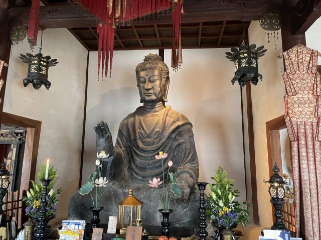
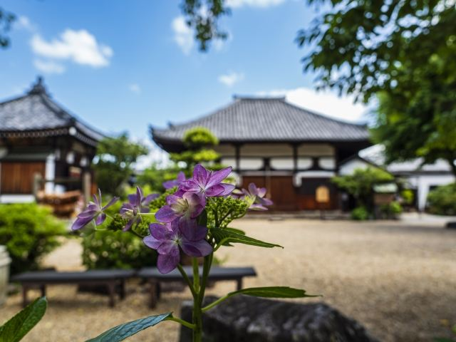

飛鳥大仏
推古天皇時代に造られた日本最古の仏像。 創建当時の面影を今に伝える貴重な文化財です。

飛鳥寺は596年に創建された、日本最古の本格的な寺院といわれています。 蘇我馬子の発願により建立され、日本仏教発祥の地として知られています。 本堂には日本最古の仏像「飛鳥大仏」が安置され、1400年以上にわたり多くの参拝者を迎えています。
| 営業時間 | 9:00〜17:30（受付17:15まで） |
|---|---|
| 定休日 | 年中無休 |
| 料金 |
一般・大学生 350円 高校生 250円 中学生以下 無料 |
| 所要時間 | 約20〜30分 |
| 駐車場 |
飛鳥寺無料駐車場
（徒歩約1分・無料）
飛鳥寺前有料駐車場 （徒歩約1分・有料） |
| アクセス |
近鉄橿原神宮前駅または飛鳥駅から明日香周遊バス利用。 飛鳥バス停から徒歩約3分。 境内は比較的平坦で歩きやすいです。 |
| 地図 | 地図はこちら |

推古天皇時代に造られた日本最古の仏像。 創建当時の面影を今に伝える貴重な文化財です。

蘇我馬子によって建立された日本最古の本格的寺院。 飛鳥時代の歴史を感じられる場所です。
飛鳥寺は596年に蘇我馬子が建立した日本初の本格的寺院です。 正式名称は「法興寺（ほうこうじ）」で、日本に仏教文化が広まるきっかけとなりました。 創建当時は塔や金堂など壮大な伽藍を備えていましたが、その多くは戦乱や火災によって失われました。 現在の本堂には、日本最古の仏像である飛鳥大仏が安置され、飛鳥時代の文化を今に伝えています。